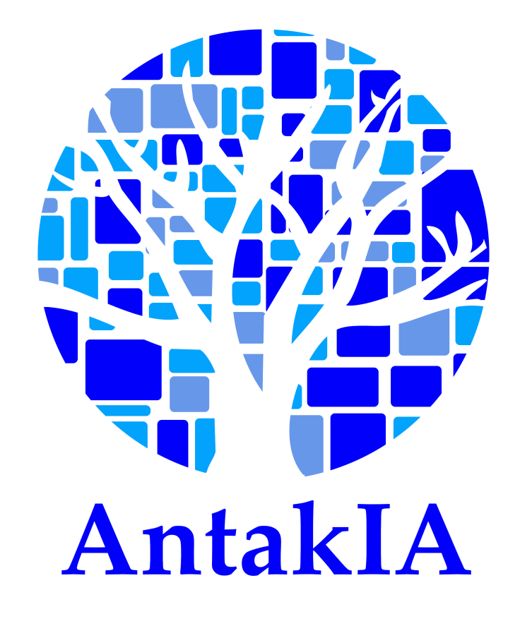

Welcome to AntakIA - Community Edition!
AntakIA is a software allowing you mainly to explore a trained machine learning (ML) model and discover what it has understood from the training data. A key issue for data scientist is to explain (one speaks of explainability of AI, aka X-AI) the model to have it adopted, and also in a short time certified to be compliant with the law. As a matter of fact, Europe should issue its AI act by the beginning of 2024. This text will require companies, when they use AI for certain use cases (high risk), to have their model certified, or sometimes self-certified.
AntakIA is a solution relevant for this compliance issue. But it does more. For instance it allows data scientist :
- to themselves better understand their dataset and model,
- help marketing teams to get new insights on their customers,
- help compliance officers to better understand the limits of the model,
- etc.
AntakIA - Community Edition is an open-source project by AI-vidence, a French company, showcasing our regional approach for AI explainability.
- Besides local and global explainability, we believe in a more relevant and intermediate scale to observe phenomena. Through a dyadic approach, it is then possible to divide accordingly the multidimensional space of input values in regions, sub-spaces where both the observations, and their explanations are alike.
- Bonus : data scientists can consequently try and substitute the original black box model with simpler and explainable models on each region.
Because we split the space in smaller pieces, with simpler surrogate models on each piece, we named our approach from the antique city Antakia (in Türkiye nowadays) famous for its roman mosaics. By the way, it also stands for A New Tool to Acquire Knowledge from artificIAl intelligence, and that what've been working on for a while !
Now, you're only a pip install antakia away from AntakIA ! ... See our getting started page for detailed instructions
Contents
Below is what you'll find in this documentation :
- Getting started : install and usage
- A step by step tutorial : first part and second part
- Regional explainability and the science behind it
- About AI-vidence, the team behind AntakIA
- Credits